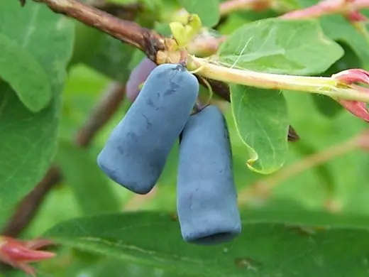

Haskap
Haskap is a wild fruit you can forage from June to July in Quebec, Ontario, Prairies, Atlantic Canada and The North. Low shrub of boreal bogs and shores with oval leaves in pairs and oblong, dusty-blue berries ripening in early summer.

When is haskap in season in Canada?
Haskap is usually in season June to July. Timing shifts with weather, latitude and altitude.
Where does haskap grow in Canada?
Haskap grows across Canada. Regions: Quebec, Ontario, Prairies, Atlantic Canada, The North.
How do you recognise haskap?
Low shrub of boreal bogs and shores with oval leaves in pairs and oblong, dusty-blue berries ripening in early summer.
How do you harvest haskap?
Pick only fully ripe fruit that comes away easily, into a shallow container so it doesn't crush. Leave plenty on the plant for birds and wildlife.
How do you eat haskap?
Fresh, in jam, pies, smoothies and ice cream; tastes like blueberry and raspberry.
How do you store haskap?
Freeze or make jam.
What is haskap good for?
Vitamin C.
What can you cook with haskap?
- Haskap jam: Haskap berries cooked with sugar: deep purple and tangy.
- Haskap ice cream: Haskap purée churned with cream and sugar.